The slide of the lecture is on the left, the same figure on the right, computed in the browser from the same forecasts. The ▶ button moves the parameter step by step.
Why Backtest Risk Forecasts? · Backtesting VaR: Coverage and Independence · The Regulator's View: Basel Traffic Light and FRTB · Backtesting Expected Shortfall · Elicitability and Scoring Functions · Comparative Backtesting · Conformal Prediction for Tail Risk · Case Study: Backtesting ES with ES Forecasts Only
Why Backtest Risk Forecasts?
Four Markets, One Risk Model
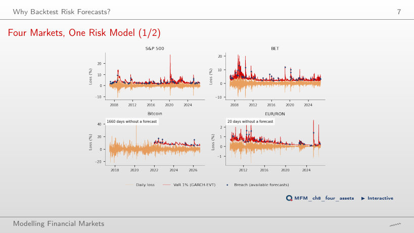
Answer
No. The rate checks only the number of breaches: 57 in 4,959 days. The Kupiec test does not reject GARCH-EVT on the S&P 500 (p = 0.302), but the DQ test does (p < 0.001): the breaches can be predicted from the VaR level and from past breaches.
Backtesting VaR: Coverage and Independence
S&P 500: Two VaR Forecasts, 2007–2026
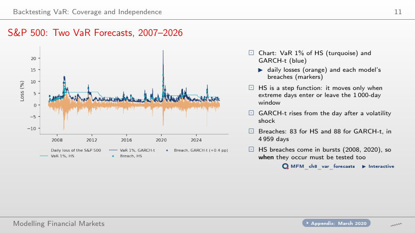
Answer
The count does not separate them: the rates are 1.67% and 1.77%, and Kupiec rejects both (p < 0.001). The difference is in the timing: HS has 26 breaches in 2008 and 12 in 2020, GARCH-t 8 and 6. Independence is rejected for HS (LR_ind = 15.90, p < 0.001) but not for GARCH-t (p = 0.095).
How Many Breaches Are Acceptable?
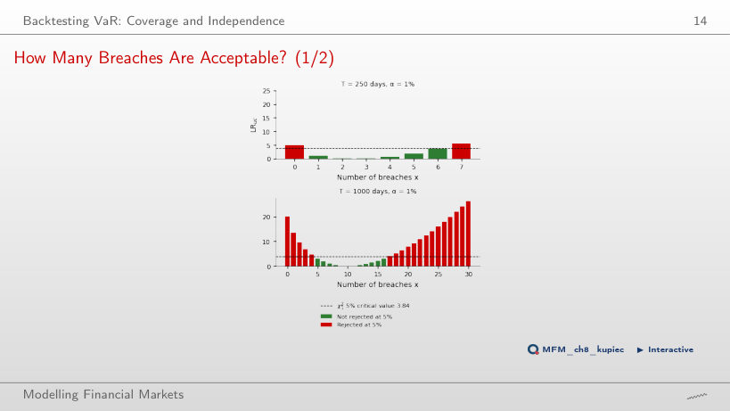
Answer
Yes: LR_uc = −500 ln 0.99 = 5.03 > 3.84, so the VaR is too conservative. In 250 days only 1 to 6 breaches are accepted, in 1,000 days 5 to 16. The rule LR_uc > 3.84 has an effective size of 9.5% at T = 250; P(x = 0) = 8.1% is the largest part.
Power of the POF Test
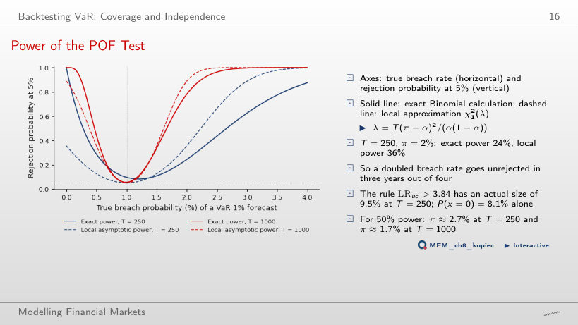
Answer
24%, by the exact Binomial calculation; the local χ²₁(λ) approximation gives 36%. On 1,000 days the exact power rises to 78%. A power of 50% needs π ≈ 2.67% at T = 250 and π ≈ 1.67% at T = 1,000.
Breach Rates Across Models and Markets
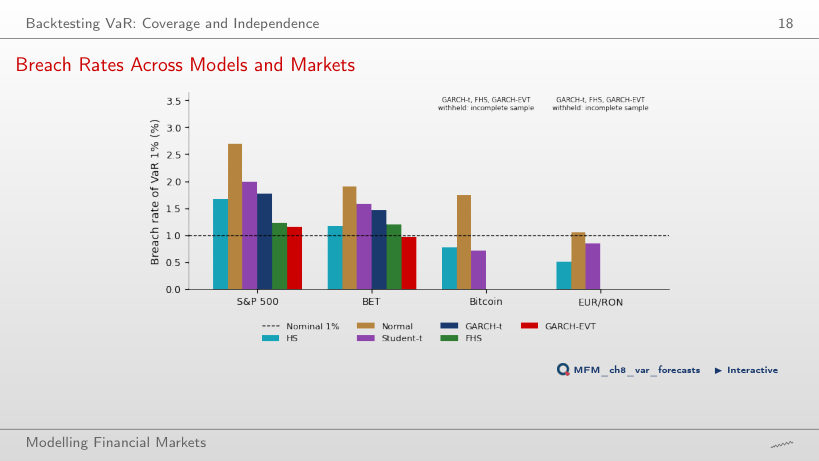
Answer
On EUR/RON: the rate is 1.06%, with p = 0.708. It is rejected on the S&P 500 (2.70%), BET (1.90%) and Bitcoin (1.74%). On EUR/RON, HS is too conservative (0.51%): an old crisis stays in the 1,000-day window and keeps its VaR high.
When Do Breaches Happen?
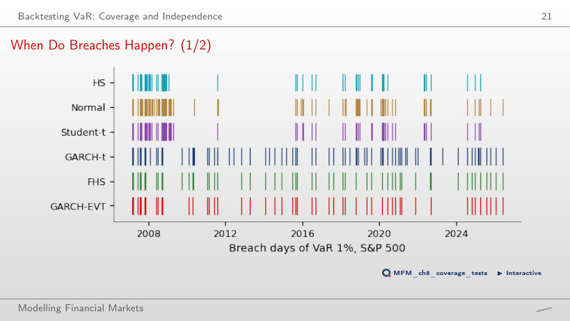
Answer
No: LR_ind = 0.95, with p = 0.33. The estimate π̂₁₁ rests on only 3 pairs of consecutive breaches (n₁₁ = 3, n₁₀ = 38). On the whole 2007–2026 sample, the same test rejects independence for HS: LR_ind = 15.90, p < 0.001.
All VaR Tests at a Glance
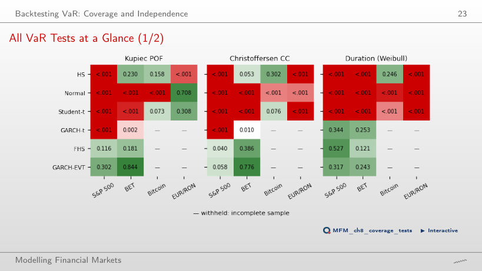
Answer
Yes. The conditional coverage test gives p = 0.040, a rejection at 5%, and the DQ test gives p < 0.001. The duration test does not reject (p = 0.527). Each test checks a different implication of conditional calibration.
The Regulator's View: Basel Traffic Light and FRTB
The Traffic Light Through Time
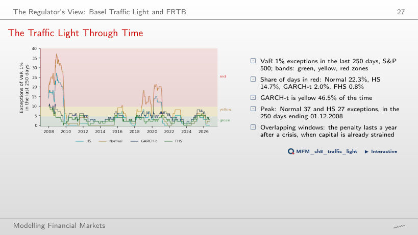
Answer
Normal 22.3%, HS 14.7%, GARCH-t 2.0%, FHS 0.8%. GARCH-t, however, is in the yellow zone 46.5% of the time. The peaks of Normal (37) and HS (27) fall in the window ending 01.12.2008; the penalty stays in force for another year after the crisis.
Backtesting Expected Shortfall
Exceedance Residuals on the S&P 500
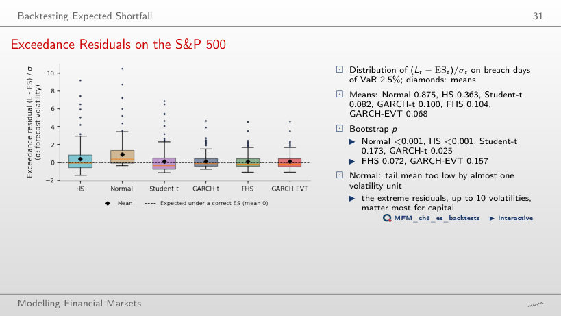
Answer
GARCH-t has more VaR 2.5% breach days: 198, against 128 for FHS. With almost equal means, the t statistic grows with √N: 1.73 for GARCH-t, 1.34 for FHS. The bootstrap p-values are 0.025 and 0.072.
Z₂ Over Rolling 250-Day Windows
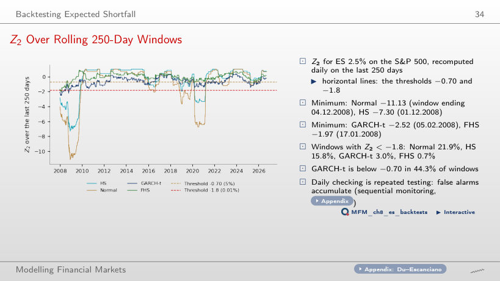
Answer
In 44.3% of the windows; below −1.8 in only 3.0%. The −0.70 threshold is the 5% critical value for T = 250, so a daily check raises many alarms. The GARCH-t minimum is −2.52, in the window ending 05.02.2008.
All ES Tests at a Glance
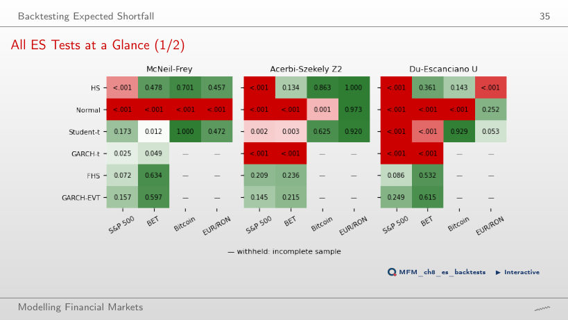
Answer
Z₂ rejects it: Z₂ = −0.723, with p = 0.002. McNeil–Frey compares only the size of the losses on breach days, while Z₂ combines frequency and size. Student-t breaches VaR 2.5% on 4.19% of the days.
Elicitability and Scoring Functions
Elicitability in Pictures
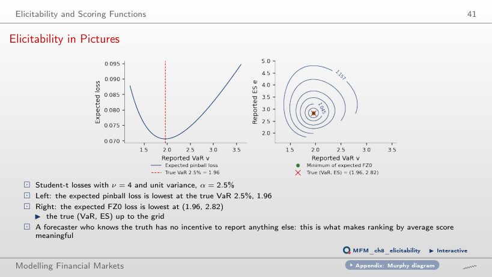
Answer
At the true VaR 2.5%, 1.96: the derivative F(v) − (1 − α) is zero at the quantile. The expected FZ0 loss reaches its minimum at (1.96, 2.82), the true (VaR, ES) pair, up to the grid. No scoring function of the ES alone has this property.
Comparative Backtesting
Average FZ0 Loss by Model
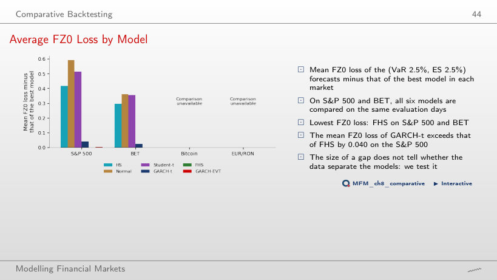
Answer
Yes: DM = 2.66, with p = 0.008 and q = 9 Newey–West lags. GARCH-EVT differs from FHS by only 0.003 (DM = 1.24, p = 0.21). On BET, FHS also has the lowest mean FZ0 loss.
Pairwise Diebold–Mariano Tests, S&P 500
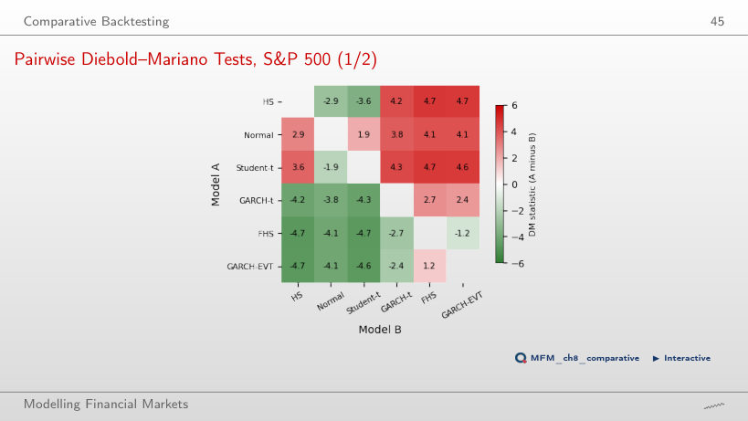
Answer
The Normal model has the higher mean FZ0 loss, so it is worse, and the difference is significant at 5%. An empirical quantile, even one that adjusts slowly, beats a thin tail. 13 of the 15 pairs differ significantly at 5%; the exceptions are Normal–Student-t (1.94) and FHS–GARCH-EVT (−1.24).
Which Models Survive?
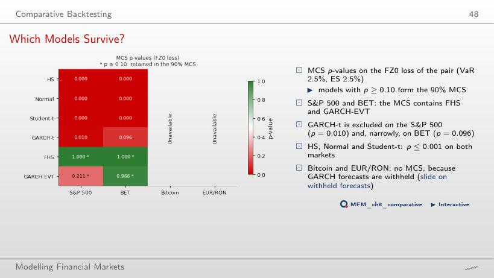
Answer
FHS (p = 1.000 on both markets) and GARCH-EVT (p = 0.211 on the S&P 500, above 0.96 on BET). GARCH-t is excluded on the S&P 500 (p = 0.010) and, narrowly, on BET (p = 0.096): with α_MCS = 5% it would stay in the MCS on BET.
Conformal Prediction for Tail Risk
Conformal VaR Through COVID-19
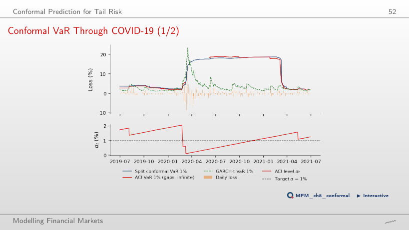
Answer
Split conformal 6, ACI 4 (8% of the 50 days). ACI set VaR = ∞ on 37 of these days, and α_t fell to 0.09%. Split conformal then stays near 18% for a year, because the March 2020 scores remain in the 250-day calibration set.
Coverage in Calm and Crisis Periods
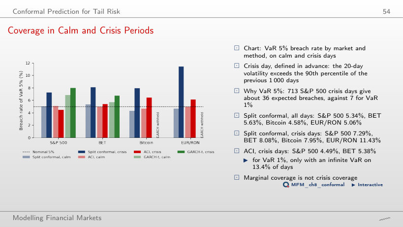
Answer
7.29%, on the 713 crisis days; on EUR/RON it reaches 11.43%. ACI lowers the crisis rate to 4.49% on the S&P 500 and 5.38% on BET. Marginal coverage does not guarantee coverage in a crisis.
Case Study: Backtesting ES with ES Forecasts Only
Case Study (3/4): Tails Matter More Than Refits
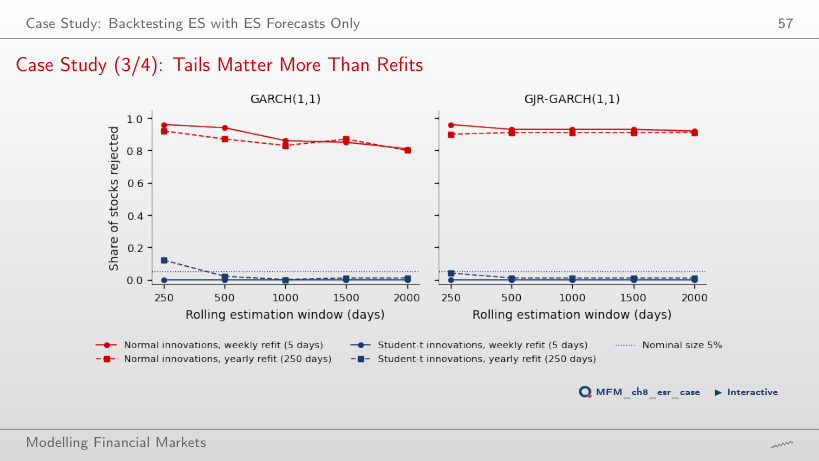
Answer
Between 0.80 and 0.96 in all 50 cells (5 windows × 5 refit frequencies × GARCH/GJR-GARCH). With Student-t innovations: at most 0.12 with 250-day windows and at most 0.01 with windows of at least 1,000 days. The tail of the distribution matters more than the refit frequency.
Daily losses (negative log returns) of the S&P 500, BET and Bitcoin, EODHD prices, and of EUR/RON, the BNR reference rate. One-day VaR and ES forecasts on a rolling window of 1,000 days, evaluated from January 2007 (EUR/RON from June 2009, Bitcoin from June 2017) to 18 September 2026. Case study: Table 3 of Bayer and Dimitriadis (2022).